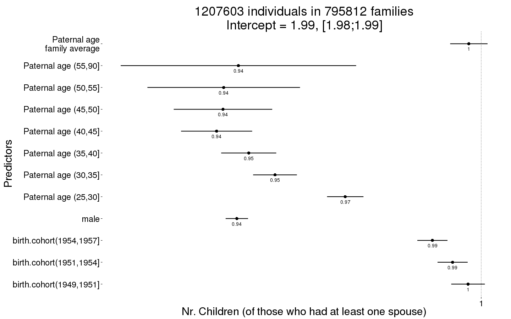
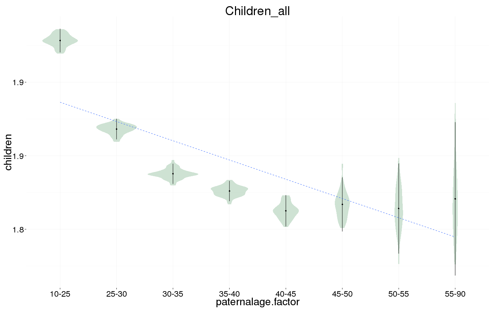
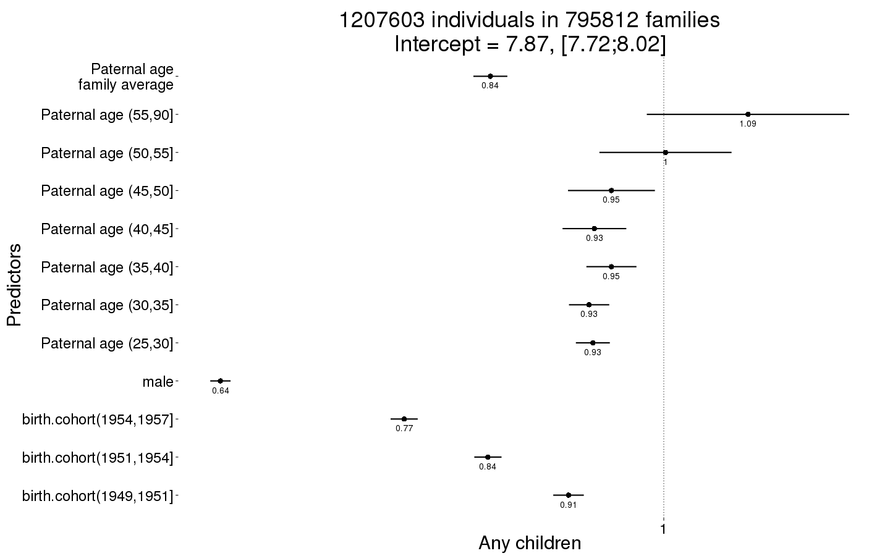
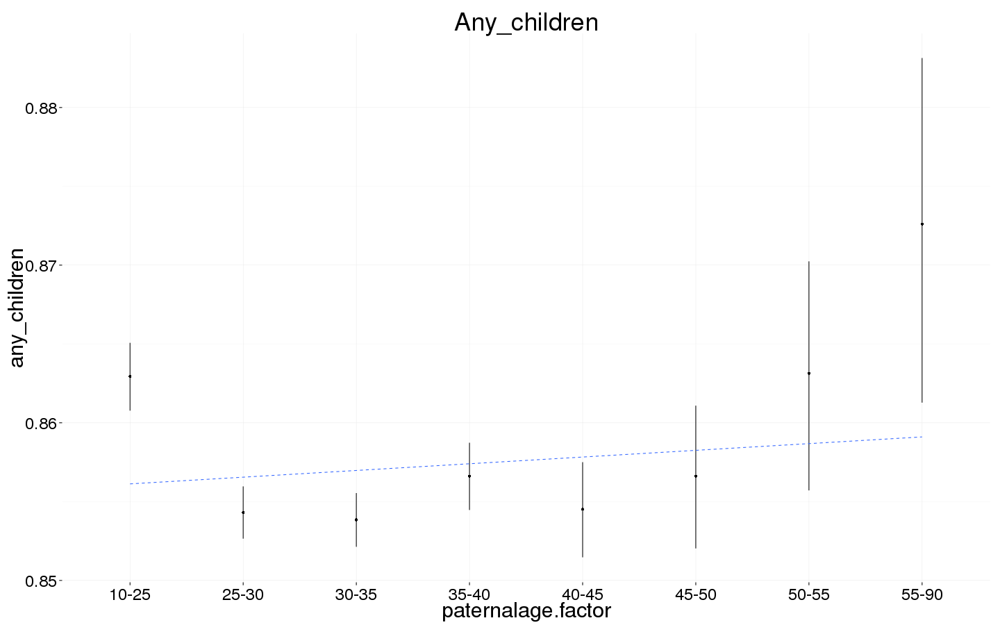
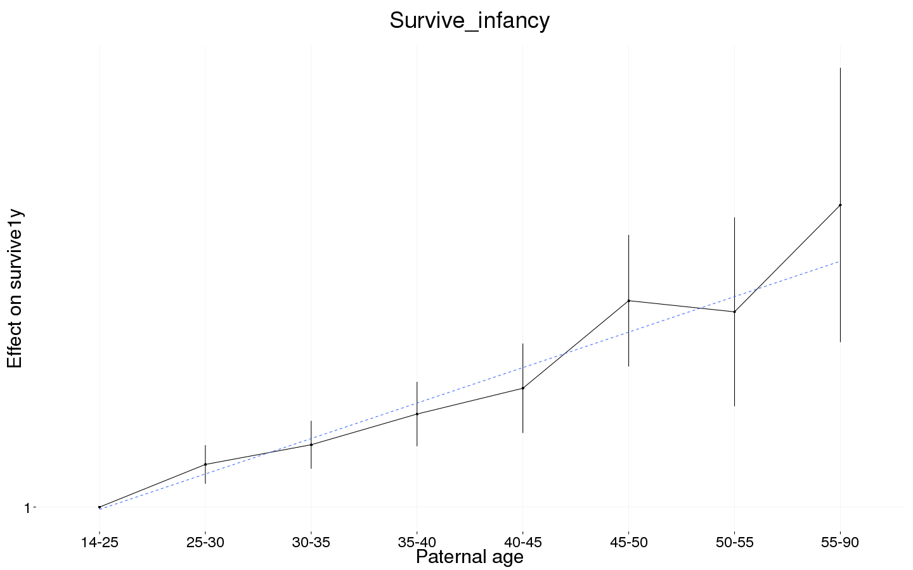
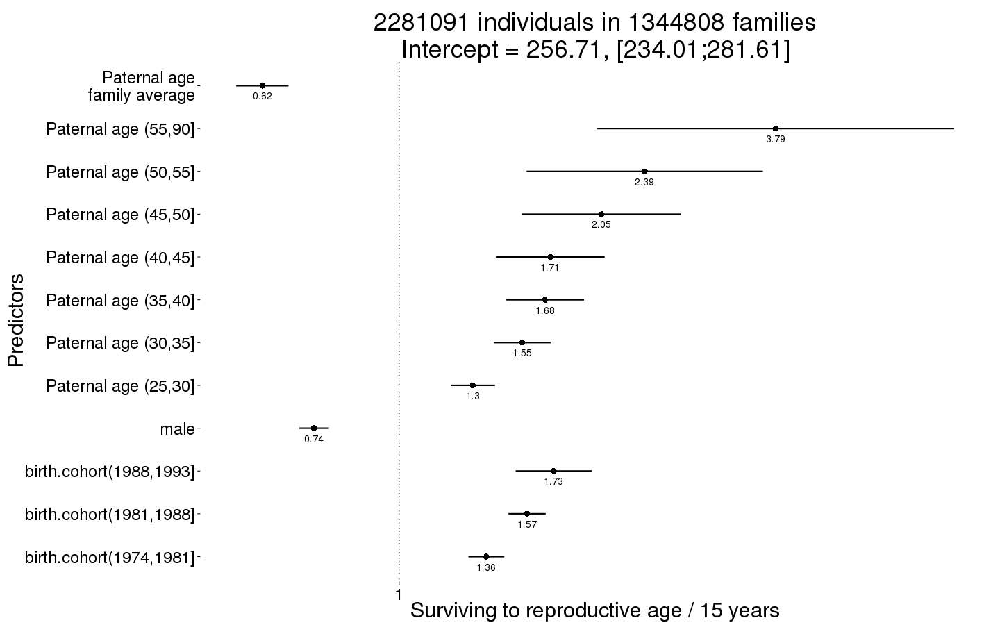
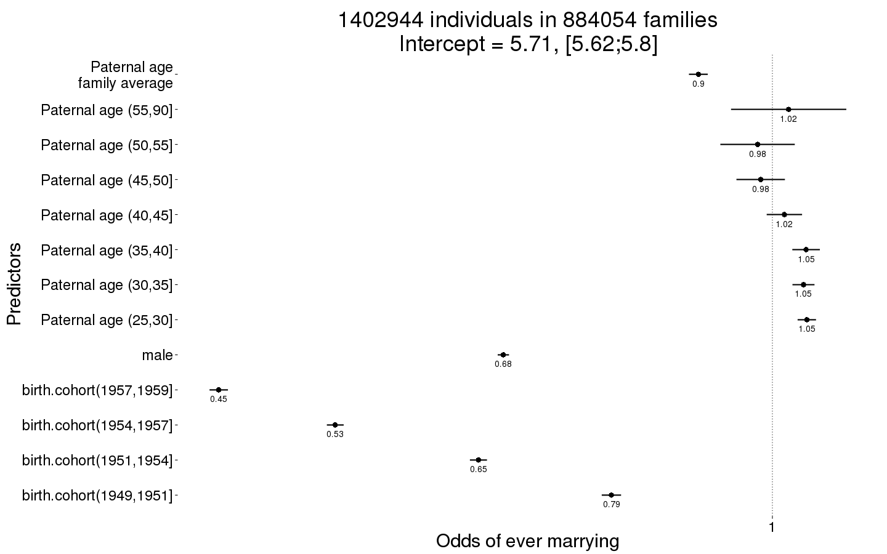
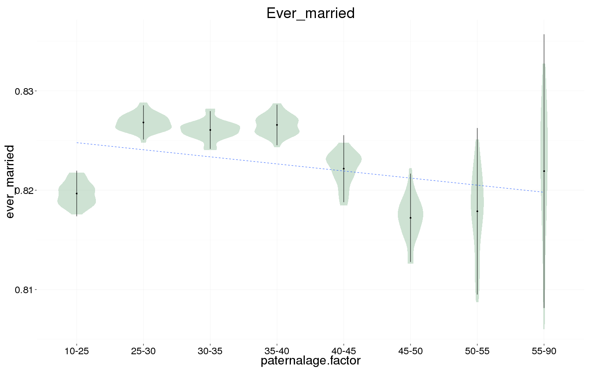
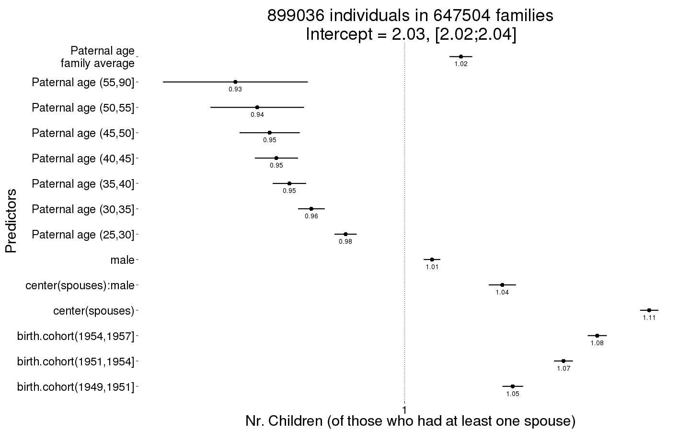
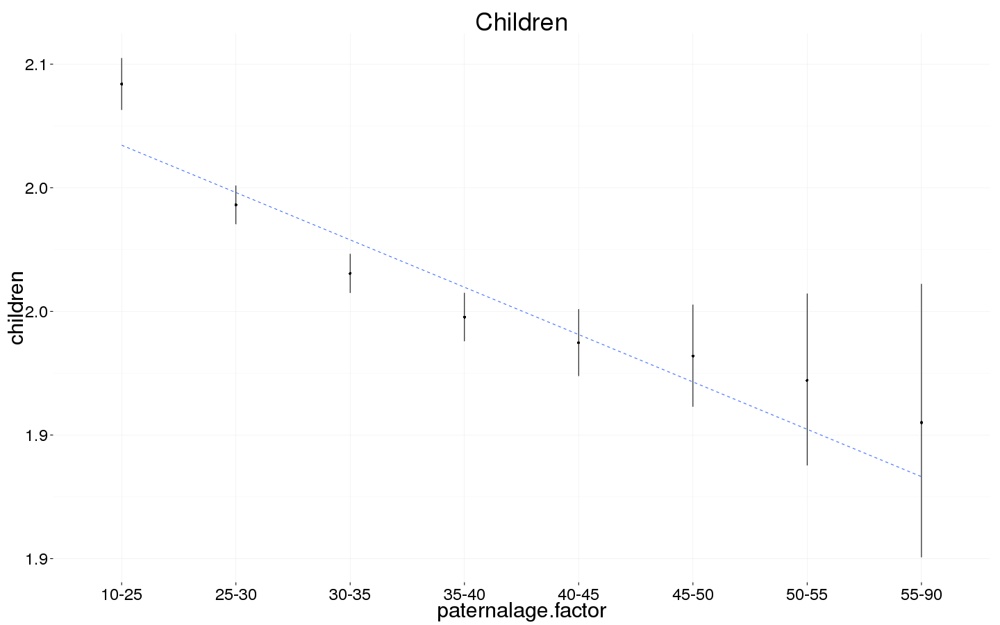

Sweden main effects
Loading details
library(data.table); library(ggplot2); library(knitr); library(lme4); library(blme)
opts_chunk$set(warning=TRUE, cache=T,cache.lazy=F,tidy=FALSE,autodep=TRUE,dev=c('png','pdf'),fig.width=20,fig.height=12.5,out.width='1440px',out.height='900px',cache.extra=file.info('swed1.rdata')[, 'mtime'])
source("0__helpers.R")
load("swed1.rdata")
Analysis description
Data subset
The swed.1 dataset contains only those children born 1947 to 1968 where paternal age is known, the birthdate of the father is between 1869 and 1954.
Model description
All of the following models have the following in common:
Multivariate normal prior
Using the R package blme which provides a thin Bayesian wrapper around lme4, we define a weak multivariate normal prior on the fixed effects. Especially in models where we have many covariates and the outcome has little variability (e.g. child mortality in modern Sweden), this helps us to combat complete separation and the Hauck-Donner effect. In the absence of these conditions, the extremely weak prior (SD = 9) leads to results that are identical or very similar to the standard lme4 models.
Optimizer settings
Bobyqa is fairly robust to convergence failures. In addition to using Bobyqa, we center some variables that otherwise lead to large eigenvalues.
control_defaults = glmerControl(optimizer = "bobyqa")
Main predictor
The main predictor, paternal age, has been binned into meaningful bins. This way, we let the data speak and can see whether the shape of the relationship is consistent with a linear effect. To this end we plot a linear regression through the best estimates for each factor (inversely weighted by confidence interval width, i.e. certainty). Even if a nonlinear fit might be slightly better, our theory clearly predicts a linear fit, so we are satisfied it the data is consistent with a linear effect.
formr::crosstabs(swed.1$paternalage.factor)
## swed.1$paternalage.factor
## [0,25] (25,30] (30,35] (35,40] (40,45] (45,50] (50,55] (55,90]
## 271814 399104 351622 226085 112768 41765 11879 4245
formr::crosstabs(swed.2$paternalage.factor)
## swed.2$paternalage.factor
## [0,25] (25,30] (30,35] (35,40] (40,45] (45,50] (50,55] (55,90]
## 620666 1178758 947900 446742 160762 51313 15695 6389
Covariates
As in our main models, we control for birth.cohort (birth years in five equally large bins), male sex.
Model stratification
We added random intercepts for each family (father-mother dyad). We then controlled for the average paternal age in the family. Hence, the paternal age effects in the plot are split into those between families and those within families or between siblings. The relevant effect for our hypothesized mechanism, de novo mutations, is paternal age between siblings.
Episodes of selection
Here, episodes of selection refers to survival, mating success, reproductive success. To steer clear of sacrificial pseudo-replication, we make sure that each effect cannot be explained by the episode of selection preceding it. At its simplest, we check for effect on survival to reproduction only among those who lived to their first birthday. In later models, we look for an effect on number of children only among those who married and control their number of spouses.
All children
unlike the other models we don’t compute the number of surviving children. The pragmatic reason is that a) if we force data to span enough time for children’s survival to count as observed, we dramatically reduce sample size and b) child mortality in modern Sweden is so low, that there really shouldn’t be much of a difference between the two numbers
Children_all <- bglmer(
children ~ male + birth.cohort + paternalage.mean + paternalage.factor + (1|idParents),
data= swed.1, subset = byear < 1958,
family = 'poisson', control = control_defaults,
fixef.prior = normal() )
summary(Children_all)
## Cov prior : idParents ~ wishart(df = 3.5, scale = Inf, posterior.scale = cov, common.scale = TRUE)
## Fixef prior: normal(sd = c(10, 2.5, ...), corr = c(0 ...), common.scale = FALSE)
## Prior dev : 66
##
## Generalized linear mixed model fit by maximum likelihood (Laplace
## Approximation) [bglmerMod]
## Family: poisson ( log )
## Formula:
## children ~ male + birth.cohort + paternalage.mean + paternalage.factor +
## (1 | idParents)
## Data: swed.1
## Control: control_defaults
## Subset: byear < 1958
##
## AIC BIC logLik deviance df.resid
## 3949037 3949205 -1974504 3949009 1207589
##
## Scaled residuals:
## Min 1Q Median 3Q Max
## -1.412 -0.640 0.094 0.779 11.512
##
## Random effects:
## Groups Name Variance Std.Dev.
## idParents (Intercept) 2.38e-05 0.00487
## Number of obs: 1207603, groups: idParents, 795812
##
## Fixed effects:
## Estimate Std. Error z value Pr(>|z|)
## (Intercept) 0.68576 0.00241 284.1 < 2e-16 ***
## male -0.05722 0.00134 -42.7 < 2e-16 ***
## birth.cohort(1949,1951] -0.00308 0.00201 -1.5 0.1252
## birth.cohort(1951,1954] -0.00670 0.00180 -3.7 0.0002 ***
## birth.cohort(1954,1957] -0.01143 0.00180 -6.3 2.2e-10 ***
## paternalage.mean -0.00289 0.00223 -1.3 0.1953
## paternalage.factor(25,30] -0.03183 0.00217 -14.6 < 2e-16 ***
## paternalage.factor(30,35] -0.04828 0.00261 -18.5 < 2e-16 ***
## paternalage.factor(35,40] -0.05444 0.00329 -16.6 < 2e-16 ***
## paternalage.factor(40,45] -0.06195 0.00425 -14.6 < 2e-16 ***
## paternalage.factor(45,50] -0.06046 0.00588 -10.3 < 2e-16 ***
## paternalage.factor(50,55] -0.06029 0.00911 -6.6 3.7e-11 ***
## paternalage.factor(55,90] -0.05684 0.01406 -4.0 5.3e-05 ***
## ---
## Signif. codes: 0 '***' 0.001 '**' 0.01 '*' 0.05 '.' 0.1 ' ' 1
##
## Correlation of Fixed Effects:
## (Intr) male b.(194 b.(1951 b.(1954 ptrnl. p.(25, p.(30,
## male -0.275
## b.(1949,195 -0.309 -0.003
## b.(1951,195 -0.342 -0.003 0.423
## b.(1954,195 -0.339 -0.003 0.424 0.475
## paternlg.mn 0.571 -0.001 0.021 0.041 0.061
## ptr.(25,30] -0.687 -0.001 -0.004 -0.001 -0.001 -0.418
## ptr.(30,35] -0.732 0.000 -0.006 -0.016 -0.020 -0.629 0.669
## ptr.(35,40] -0.716 0.000 -0.006 -0.009 -0.016 -0.724 0.626 0.724
## ptr.(40,45] -0.661 0.001 -0.010 -0.017 -0.022 -0.748 0.563 0.679
## ptr.(45,50] -0.571 0.003 -0.008 -0.017 -0.025 -0.701 0.474 0.591
## ptr.(50,55] -0.437 0.001 -0.008 -0.016 -0.023 -0.573 0.356 0.457
## ptr.(55,90] -0.351 0.000 -0.006 -0.013 -0.018 -0.487 0.279 0.370
## p.(35, p.(40, p.(45, p.(50,
## male
## b.(1949,195
## b.(1951,195
## b.(1954,195
## paternlg.mn
## ptr.(25,30]
## ptr.(30,35]
## ptr.(35,40]
## ptr.(40,45] 0.707
## ptr.(45,50] 0.627 0.617
## ptr.(50,55] 0.492 0.488 0.444
## ptr.(55,90] 0.403 0.403 0.369 0.297
Children_all_coefs = fortify_mine(Children_all)
plot_fortified_mer(Children_all_coefs, "Nr. Children (of those who had at least one spouse)")

Children_all_boot = plot_factor_response(Children_all, ncpus = 20)

Any children
swed.1$any_children = ifelse(swed.1$children > 0, 1, 0)
Any_children <- bglmer(
any_children ~ birth.cohort + male + paternalage.mean + paternalage.factor + (1|idParents),
data= swed.1, subset = byear < 1958,
family = 'binomial', control = control_defaults,
fixef.prior = normal() )
summary(Any_children)
## Cov prior : idParents ~ wishart(df = 3.5, scale = Inf, posterior.scale = cov, common.scale = TRUE)
## Fixef prior: normal(sd = c(10, 2.5, ...), corr = c(0 ...), common.scale = FALSE)
## Prior dev : 51
##
## Generalized linear mixed model fit by maximum likelihood (Laplace
## Approximation) [bglmerMod]
## Family: binomial ( logit )
## Formula:
## any_children ~ birth.cohort + male + paternalage.mean + paternalage.factor +
## (1 | idParents)
## Data: swed.1
## Control: control_defaults
## Subset: byear < 1958
##
## AIC BIC logLik deviance df.resid
## 1185340 1185508 -592656 1185312 1207589
##
## Scaled residuals:
## Min 1Q Median 3Q Max
## -2.906 0.332 0.386 0.445 1.169
##
## Random effects:
## Groups Name Variance Std.Dev.
## idParents (Intercept) 0.789 0.888
## Number of obs: 1207603, groups: idParents, 795812
##
## Fixed effects:
## Estimate Std. Error z value Pr(>|z|)
## (Intercept) 2.06281 0.00969 212.8 < 2e-16 ***
## birth.cohort(1949,1951] -0.09541 0.00781 -12.2 < 2e-16 ***
## birth.cohort(1951,1954] -0.17613 0.00696 -25.3 < 2e-16 ***
## birth.cohort(1954,1957] -0.26002 0.00693 -37.5 < 2e-16 ***
## male -0.44408 0.00519 -85.5 < 2e-16 ***
## paternalage.mean -0.17368 0.00867 -20.0 < 2e-16 ***
## paternalage.factor(25,30] -0.07104 0.00868 -8.2 2.8e-16 ***
## paternalage.factor(30,35] -0.07479 0.01029 -7.3 3.7e-13 ***
## paternalage.factor(35,40] -0.05244 0.01279 -4.1 4.1e-05 ***
## paternalage.factor(40,45] -0.06947 0.01629 -4.3 2.0e-05 ***
## paternalage.factor(45,50] -0.05241 0.02222 -2.4 0.018 *
## paternalage.factor(50,55] 0.00171 0.03378 0.1 0.960
## paternalage.factor(55,90] 0.08434 0.05170 1.6 0.103
## ---
## Signif. codes: 0 '***' 0.001 '**' 0.01 '*' 0.05 '.' 0.1 ' ' 1
##
## Correlation of Fixed Effects:
## (Intr) b.(194 b.(1951 b.(1954 male ptrnl. p.(25, p.(30,
## b.(1949,195 -0.305
## b.(1951,195 -0.335 0.444
## b.(1954,195 -0.330 0.448 0.513
## male -0.311 -0.001 0.002 0.003
## paternlg.mn 0.523 0.030 0.063 0.091 0.003
## ptr.(25,30] -0.686 -0.007 -0.011 -0.017 0.001 -0.396
## ptr.(30,35] -0.727 -0.012 -0.032 -0.045 0.002 -0.607 0.691
## ptr.(35,40] -0.706 -0.014 -0.030 -0.046 0.001 -0.710 0.639 0.744
## ptr.(40,45] -0.654 -0.018 -0.037 -0.052 0.001 -0.747 0.576 0.695
## ptr.(45,50] -0.567 -0.016 -0.036 -0.052 0.003 -0.712 0.487 0.608
## ptr.(50,55] -0.439 -0.015 -0.031 -0.045 0.001 -0.594 0.370 0.477
## ptr.(55,90] -0.353 -0.012 -0.026 -0.037 -0.001 -0.512 0.291 0.387
## p.(35, p.(40, p.(45, p.(50,
## b.(1949,195
## b.(1951,195
## b.(1954,195
## male
## paternlg.mn
## ptr.(25,30]
## ptr.(30,35]
## ptr.(35,40]
## ptr.(40,45] 0.731
## ptr.(45,50] 0.649 0.651
## ptr.(50,55] 0.516 0.519 0.486
## ptr.(55,90] 0.425 0.431 0.401 0.338
Any_children_coefs = fortify_mine(Any_children)
plot_fortified_mer(Any_children_coefs, "Any children")

plot_factor_predicted(Any_children)

Survival to first year
Survive_infancy <- glmer(
survive1y ~ birth.cohort + male + paternalage.mean + paternalage.factor + (1|idParents),
data= swed.2, subset = byear < 2000,
family = 'binomial', control = control_defaults,
nAGQ = 0)
summary(Survive_infancy)
## Generalized linear mixed model fit by maximum likelihood (Adaptive
## Gauss-Hermite Quadrature, nAGQ = 0) [glmerMod]
## Family: binomial ( logit )
## Formula:
## survive1y ~ birth.cohort + male + paternalage.mean + paternalage.factor +
## (1 | idParents)
## Data: swed.2
## Control: control_defaults
## Subset: byear < 2000
##
## AIC BIC logLik deviance df.resid
## 227756 227951 -113863 227726 3428210
##
## Scaled residuals:
## Min 1Q Median 3Q Max
## -11.498 0.062 0.070 0.079 0.619
##
## Random effects:
## Groups Name Variance Std.Dev.
## idParents (Intercept) 1.43 1.19
## Number of obs: 3428225, groups: idParents, 1886270
##
## Fixed effects:
## Estimate Std. Error z value Pr(>|z|)
## (Intercept) 4.7933 0.0284 169.0 < 2e-16 ***
## birth.cohort(1974,1981] 0.3379 0.0207 16.3 < 2e-16 ***
## birth.cohort(1981,1988] 0.4889 0.0214 22.9 < 2e-16 ***
## birth.cohort(1988,1993] 0.6219 0.0234 26.6 < 2e-16 ***
## birth.cohort(1993,1999] 0.9755 0.0268 36.4 < 2e-16 ***
## male -0.2402 0.0150 -16.1 < 2e-16 ***
## paternalage.mean -0.3733 0.0268 -13.9 < 2e-16 ***
## paternalage.factor(25,30] 0.1036 0.0239 4.3 1.4e-05 ***
## paternalage.factor(30,35] 0.1515 0.0297 5.1 3.4e-07 ***
## paternalage.factor(35,40] 0.2261 0.0400 5.7 1.5e-08 ***
## paternalage.factor(40,45] 0.2887 0.0554 5.2 1.9e-07 ***
## paternalage.factor(45,50] 0.5015 0.0816 6.1 7.8e-10 ***
## paternalage.factor(50,55] 0.4744 0.1171 4.1 5.1e-05 ***
## paternalage.factor(55,90] 0.7340 0.1702 4.3 1.6e-05 ***
## ---
## Signif. codes: 0 '***' 0.001 '**' 0.01 '*' 0.05 '.' 0.1 ' ' 1
##
## Correlation of Fixed Effects:
## (Intr) b.(197 b.(1981 b.(1988 b.(199 male ptrnl. p.(25,
## b.(1974,198 -0.312
## b.(1981,198 -0.298 0.431
## b.(1988,199 -0.266 0.393 0.394
## b.(1993,199 -0.231 0.346 0.349 0.322
## male -0.303 0.000 -0.001 0.000 0.000
## paternlg.mn 0.646 -0.047 -0.066 -0.057 -0.069 0.000
## ptr.(25,30] -0.697 -0.022 -0.023 -0.026 -0.028 0.001 -0.416
## ptr.(30,35] -0.743 -0.030 -0.043 -0.045 -0.050 0.001 -0.643 0.705
## ptr.(35,40] -0.716 -0.002 -0.027 -0.034 -0.034 0.002 -0.735 0.632
## ptr.(40,45] -0.660 0.019 0.005 -0.011 -0.008 0.001 -0.747 0.546
## ptr.(45,50] -0.559 0.023 0.024 0.007 0.007 0.001 -0.677 0.441
## ptr.(50,55] -0.468 0.020 0.025 0.015 0.013 0.000 -0.592 0.357
## ptr.(55,90] -0.396 0.017 0.023 0.017 0.019 0.001 -0.523 0.294
## p.(30, p.(35, p.(40, p.(45, p.(50,
## b.(1974,198
## b.(1981,198
## b.(1988,199
## b.(1993,199
## male
## paternlg.mn
## ptr.(25,30]
## ptr.(30,35]
## ptr.(35,40] 0.742
## ptr.(40,45] 0.674 0.695
## ptr.(45,50] 0.566 0.596 0.577
## ptr.(50,55] 0.472 0.504 0.492 0.436
## ptr.(55,90] 0.399 0.431 0.425 0.377 0.328
Survive_infancy_coefs = fortify_mine(Survive_infancy)
plot_factor_linearity(Survive_infancy_coefs)

Survival to reproductive age
Survive_reproductive <- glmer(
surviveR ~ birth.cohort + male + paternalage.mean + paternalage.factor + (1|idParents),
data= swed.2, subset = survive1y == TRUE & byear < 1990,
family = 'binomial', control = control_defaults,
nAGQ = 0)
summary(Survive_reproductive)
## Generalized linear mixed model fit by maximum likelihood (Adaptive
## Gauss-Hermite Quadrature, nAGQ = 0) [glmerMod]
## Family: binomial ( logit )
## Formula:
## surviveR ~ birth.cohort + male + paternalage.mean + paternalage.factor +
## (1 | idParents)
## Data: swed.2
## Control: control_defaults
## Subset: survive1y == TRUE & byear < 1990
##
## AIC BIC logLik deviance df.resid
## 79708 79885 -39840 79680 2281077
##
## Scaled residuals:
## Min 1Q Median 3Q Max
## -13.610 0.044 0.049 0.054 0.338
##
## Random effects:
## Groups Name Variance Std.Dev.
## idParents (Intercept) 1.62 1.27
## Number of obs: 2281091, groups: idParents, 1344808
##
## Fixed effects:
## Estimate Std. Error z value Pr(>|z|)
## (Intercept) 5.5480 0.0472 117.5 < 2e-16 ***
## birth.cohort(1974,1981] 0.3087 0.0325 9.5 < 2e-16 ***
## birth.cohort(1981,1988] 0.4528 0.0336 13.5 < 2e-16 ***
## birth.cohort(1988,1993] 0.5470 0.0687 8.0 1.7e-15 ***
## male -0.3014 0.0269 -11.2 < 2e-16 ***
## paternalage.mean -0.4844 0.0472 -10.3 < 2e-16 ***
## paternalage.factor(25,30] 0.2608 0.0399 6.5 6.3e-11 ***
## paternalage.factor(30,35] 0.4353 0.0514 8.5 < 2e-16 ***
## paternalage.factor(35,40] 0.5161 0.0705 7.3 2.5e-13 ***
## paternalage.factor(40,45] 0.5349 0.0982 5.4 5.1e-08 ***
## paternalage.factor(45,50] 0.7165 0.1436 5.0 6.0e-07 ***
## paternalage.factor(50,55] 0.8694 0.2134 4.1 4.6e-05 ***
## paternalage.factor(55,90] 1.3328 0.3223 4.1 3.5e-05 ***
## ---
## Signif. codes: 0 '***' 0.001 '**' 0.01 '*' 0.05 '.' 0.1 ' ' 1
##
## Correlation of Fixed Effects:
## (Intr) b.(197 b.(1981 b.(1988 male ptrnl. p.(25, p.(30,
## b.(1974,198 -0.300
## b.(1981,198 -0.284 0.436
## b.(1988,199 -0.139 0.213 0.214
## male -0.335 0.000 0.000 0.000
## paternlg.mn 0.670 -0.055 -0.074 -0.035 0.000
## ptr.(25,30] -0.688 -0.020 -0.022 -0.007 0.001 -0.435
## ptr.(30,35] -0.726 -0.030 -0.046 -0.022 0.001 -0.647 0.667
## ptr.(35,40] -0.700 0.002 -0.032 -0.016 0.001 -0.728 0.598 0.695
## ptr.(40,45] -0.652 0.026 0.006 -0.005 0.000 -0.739 0.523 0.638
## ptr.(45,50] -0.562 0.031 0.029 0.009 0.001 -0.675 0.431 0.544
## ptr.(50,55] -0.457 0.023 0.028 0.012 0.000 -0.572 0.341 0.443
## ptr.(55,90] -0.376 0.019 0.024 0.012 0.000 -0.491 0.275 0.366
## p.(35, p.(40, p.(45, p.(50,
## b.(1974,198
## b.(1981,198
## b.(1988,199
## male
## paternlg.mn
## ptr.(25,30]
## ptr.(30,35]
## ptr.(35,40]
## ptr.(40,45] 0.656
## ptr.(45,50] 0.570 0.556
## ptr.(50,55] 0.469 0.461 0.412
## ptr.(55,90] 0.393 0.388 0.348 0.293
Survive_reproductive_coefs = fortify_mine(Survive_reproductive)
plot_fortified_mer(Survive_reproductive_coefs, "Surviving to reproductive age / 15 years")

Ever married
Ever_married <- bglmer(
ever_married ~ birth.cohort + male + paternalage.mean + paternalage.factor + (1|idParents),
data= swed.1, subset = (surviveR == T | is.na(surviveR)) & byear < 1960,
family = 'binomial', control = control_defaults,
fixef.prior = normal() )
summary(Ever_married)
## Cov prior : idParents ~ wishart(df = 3.5, scale = Inf, posterior.scale = cov, common.scale = TRUE)
## Fixef prior: normal(sd = c(10, 2.5, ...), corr = c(0 ...), common.scale = FALSE)
## Prior dev : 56
##
## Generalized linear mixed model fit by maximum likelihood (Laplace
## Approximation) [bglmerMod]
## Family: binomial ( logit )
## Formula:
## ever_married ~ birth.cohort + male + paternalage.mean + paternalage.factor +
## (1 | idParents)
## Data: swed.1
## Control: control_defaults
## Subset: (surviveR == T | is.na(surviveR)) & byear < 1960
##
## AIC BIC logLik deviance df.resid
## 1574311 1574493 -787140 1574281 1402929
##
## Scaled residuals:
## Min 1Q Median 3Q Max
## -2.774 -1.099 0.475 0.564 1.338
##
## Random effects:
## Groups Name Variance Std.Dev.
## idParents (Intercept) 0.441 0.664
## Number of obs: 1402944, groups: idParents, 884054
##
## Fixed effects:
## Estimate Std. Error z value Pr(>|z|)
## (Intercept) 1.74274 0.00797 218.7 < 2e-16 ***
## birth.cohort(1949,1951] -0.23296 0.00714 -32.6 < 2e-16 ***
## birth.cohort(1951,1954] -0.42536 0.00630 -67.5 < 2e-16 ***
## birth.cohort(1954,1957] -0.63254 0.00620 -102.0 < 2e-16 ***
## birth.cohort(1957,1959] -0.80117 0.00679 -118.0 < 2e-16 ***
## male -0.38929 0.00417 -93.4 < 2e-16 ***
## paternalage.mean -0.10713 0.00695 -15.4 < 2e-16 ***
## paternalage.factor(25,30] 0.04984 0.00680 7.3 2.2e-13 ***
## paternalage.factor(30,35] 0.04502 0.00813 5.5 3.1e-08 ***
## paternalage.factor(35,40] 0.04878 0.01017 4.8 1.6e-06 ***
## paternalage.factor(40,45] 0.01737 0.01307 1.3 0.18
## paternalage.factor(45,50] -0.01693 0.01789 -0.9 0.34
## paternalage.factor(50,55] -0.02142 0.02747 -0.8 0.44
## paternalage.factor(55,90] 0.02356 0.04255 0.6 0.58
## ---
## Signif. codes: 0 '***' 0.001 '**' 0.01 '*' 0.05 '.' 0.1 ' ' 1
##
## Correlation of Fixed Effects:
## (Intr) b.(194 b.(1951 b.(1954 b.(1957 male ptrnl. p.(25,
## b.(1949,195 -0.361
## b.(1951,195 -0.404 0.467
## b.(1954,195 -0.406 0.477 0.547
## b.(1957,195 -0.367 0.435 0.500 0.517
## male -0.297 0.002 0.007 0.012 0.013
## paternlg.mn 0.513 0.025 0.051 0.077 0.090 0.002
## ptr.(25,30] -0.641 -0.006 -0.007 -0.013 -0.019 -0.002 -0.408
## ptr.(30,35] -0.683 -0.009 -0.024 -0.036 -0.038 -0.001 -0.618 0.673
## ptr.(35,40] -0.666 -0.010 -0.021 -0.036 -0.044 0.000 -0.715 0.625
## ptr.(40,45] -0.616 -0.014 -0.027 -0.041 -0.045 0.001 -0.743 0.562
## ptr.(45,50] -0.534 -0.012 -0.026 -0.041 -0.047 0.002 -0.704 0.476
## ptr.(50,55] -0.412 -0.011 -0.023 -0.035 -0.040 0.001 -0.582 0.360
## ptr.(55,90] -0.329 -0.008 -0.019 -0.028 -0.034 0.000 -0.496 0.282
## p.(30, p.(35, p.(40, p.(45, p.(50,
## b.(1949,195
## b.(1951,195
## b.(1954,195
## b.(1957,195
## male
## paternlg.mn
## ptr.(25,30]
## ptr.(30,35]
## ptr.(35,40] 0.729
## ptr.(40,45] 0.680 0.713
## ptr.(45,50] 0.595 0.633 0.629
## ptr.(50,55] 0.464 0.500 0.500 0.465
## ptr.(55,90] 0.374 0.409 0.411 0.381 0.318
Ever_married_coefs = fortify_mine(Ever_married)
plot_fortified_mer(Ever_married_coefs, "Odds of ever marrying")

Ever_married_boot = plot_factor_response(Ever_married, ncpus = 20)

Number of children
Children <- bglmer(
children ~ center(spouses)*male + birth.cohort + paternalage.mean + paternalage.factor + (1|idParents),
data= swed.1, subset = spouses > 0 & byear < 1958,
family = 'poisson', control = control_defaults,
fixef.prior = normal() )
summary(Children)
## Cov prior : idParents ~ wishart(df = 3.5, scale = Inf, posterior.scale = cov, common.scale = TRUE)
## Fixef prior: normal(sd = c(10, 2.5, ...), corr = c(0 ...), common.scale = FALSE)
## Prior dev : 77
##
## Generalized linear mixed model fit by maximum likelihood (Laplace
## Approximation) [bglmerMod]
## Family: poisson ( log )
## Formula:
## children ~ center(spouses) * male + birth.cohort + paternalage.mean +
## paternalage.factor + (1 | idParents)
## Data: swed.1
## Control: control_defaults
## Subset: spouses > 0 & byear < 1958
##
## AIC BIC logLik deviance df.resid
## 2874286 2874473 -1437127 2874254 9e+05
##
## Scaled residuals:
## Min 1Q Median 3Q Max
## -1.979 -0.229 -0.079 0.561 10.203
##
## Random effects:
## Groups Name Variance Std.Dev.
## idParents (Intercept) 2.17e-06 0.00147
## Number of obs: 899036, groups: idParents, 647504
##
## Fixed effects:
## Estimate Std. Error z value Pr(>|z|)
## (Intercept) 0.70919 0.00278 254.8 < 2e-16 ***
## center(spouses) 0.10029 0.00191 52.4 < 2e-16 ***
## male 0.01121 0.00175 6.4 1.4e-10 ***
## birth.cohort(1949,1951] 0.04434 0.00216 20.5 < 2e-16 ***
## birth.cohort(1951,1954] 0.06512 0.00198 32.9 < 2e-16 ***
## birth.cohort(1954,1957] 0.07898 0.00200 39.5 < 2e-16 ***
## paternalage.mean 0.02307 0.00239 9.7 < 2e-16 ***
## paternalage.factor(25,30] -0.02423 0.00234 -10.4 < 2e-16 ***
## paternalage.factor(30,35] -0.03823 0.00279 -13.7 < 2e-16 ***
## paternalage.factor(35,40] -0.04726 0.00350 -13.5 < 2e-16 ***
## paternalage.factor(40,45] -0.05259 0.00453 -11.6 < 2e-16 ***
## paternalage.factor(45,50] -0.05536 0.00630 -8.8 < 2e-16 ***
## paternalage.factor(50,55] -0.06046 0.00980 -6.2 6.8e-10 ***
## paternalage.factor(55,90] -0.06940 0.01515 -4.6 4.7e-06 ***
## center(spouses):male 0.04008 0.00285 14.1 < 2e-16 ***
## ---
## Signif. codes: 0 '***' 0.001 '**' 0.01 '*' 0.05 '.' 0.1 ' ' 1
##
## Correlation of Fixed Effects:
## (Intr) cntr() male b.(194 b.(1951 b.(1954 ptrnl. p.(25,
## centr(spss) -0.380
## male -0.344 0.419
## b.(1949,195 -0.337 0.148 0.026
## b.(1951,195 -0.386 0.218 0.048 0.437
## b.(1954,195 -0.382 0.222 0.049 0.435 0.491
## paternlg.mn 0.515 0.021 0.004 0.025 0.047 0.065
## ptr.(25,30] -0.644 0.012 -0.001 -0.001 0.001 0.001 -0.412
## ptr.(30,35] -0.684 0.012 0.000 -0.002 -0.013 -0.016 -0.622 0.671
## ptr.(35,40] -0.666 0.007 -0.001 -0.004 -0.008 -0.015 -0.718 0.627
## ptr.(40,45] -0.612 0.001 -0.001 -0.009 -0.016 -0.021 -0.743 0.563
## ptr.(45,50] -0.525 -0.002 0.001 -0.008 -0.018 -0.026 -0.696 0.471
## ptr.(50,55] -0.399 -0.005 -0.001 -0.009 -0.017 -0.024 -0.567 0.352
## ptr.(55,90] -0.317 -0.007 -0.002 -0.007 -0.016 -0.020 -0.482 0.275
## cntr(spss): 0.199 -0.644 -0.566 -0.029 -0.057 -0.055 -0.002 -0.001
## p.(30, p.(35, p.(40, p.(45, p.(50, p.(55,
## centr(spss)
## male
## b.(1949,195
## b.(1951,195
## b.(1954,195
## paternlg.mn
## ptr.(25,30]
## ptr.(30,35]
## ptr.(35,40] 0.723
## ptr.(40,45] 0.677 0.705
## ptr.(45,50] 0.587 0.623 0.613
## ptr.(50,55] 0.452 0.487 0.483 0.439
## ptr.(55,90] 0.364 0.397 0.398 0.364 0.292
## cntr(spss): 0.000 0.001 0.002 0.001 0.002 0.001
Children_coefs = fortify_mine(Children)
plot_fortified_mer(Children_coefs, "Nr. Children (of those who had at least one spouse)")

plot_factor_predicted(Children)
